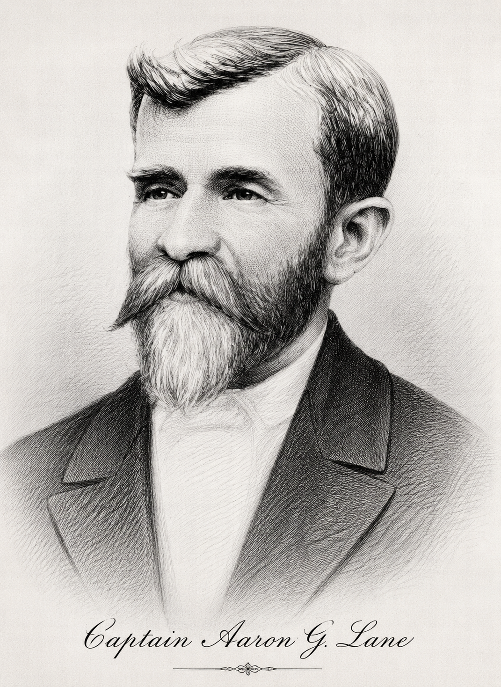
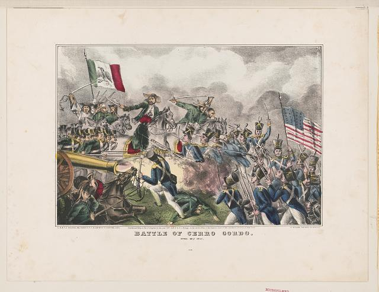
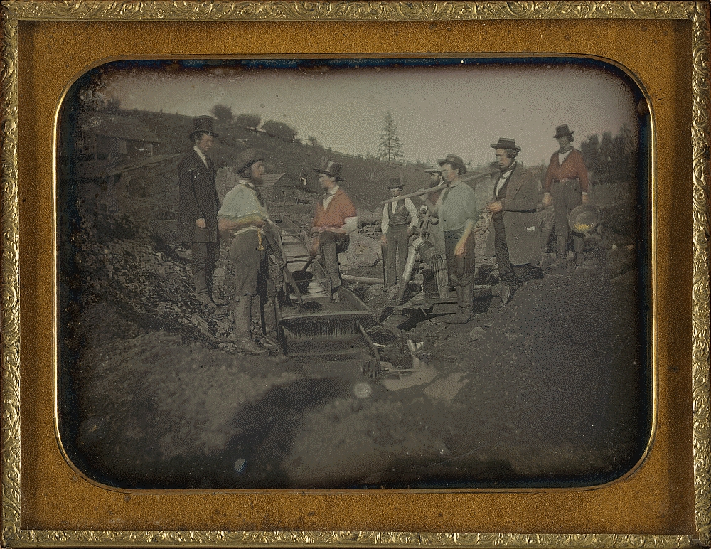
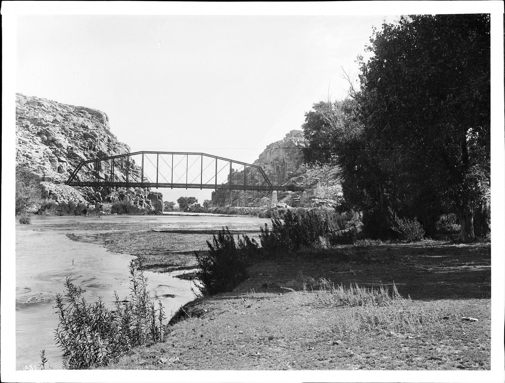
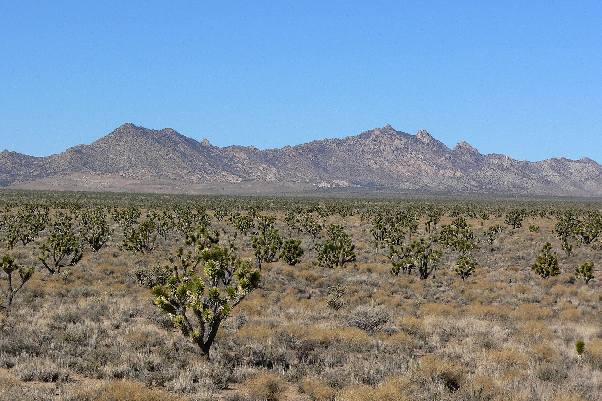

Lane Family · Mojave Pioneer
Last Crossing of the Mojave
1817 Piermont, N.H. — 1883 Bryman, California

Piermont, New Hampshire
Youngest son of Jonathan Lane and Mary Towle; twin to Moses P. Lane. Vol. I places his birth at Piermont, 23 December 1817 — before Mexico, California, and the desert corridor.
Twin Moses & the Richmonds
1847–1850



1858–1865
Ranch and traveler store at the Lower Narrows — first permanent settlement on the Mojave River. The Last Crossing on the Mormon Road before Cajon Pass. Sold in 1865 for the Bryman alfalfa ranch.
Western settlement routes
For centuries the Mohave Trail carried trade through the Lower Narrows. By Aaron’s day the Mormon Road and Mojave Road — and the older Spanish Trail corridor — sent wagons and freight to the last ford on the Mojave River before Cajon Pass. His station sat at that pinch point.
Lane Genealogies Vol. I · p. 148
“Died unm. 14 Sept., 1883, at Lane’s Crossing of the Mojave river. His home was in the family of Mrs. Richmond, his neice, in Halleck, Cal.”
